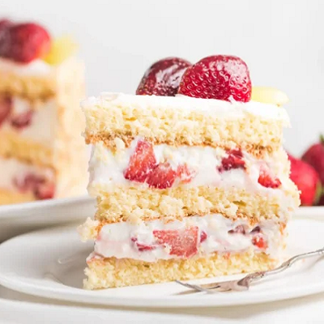

Bolo Gelado de Morango
Ingredientes
Para a Massa (Pão de Ló)
- 3 ovos grandes
- 1 e 1/2 xícaras de açúcar
- 2 xícaras de farinha de trigo
- 1/2 xícara de água morna
- 1 colher de sopa de fermento em pó
- 1 colher de chá de essência de baunilha
Para o Recheio (Creme de Leite Condensado)
- 1 lata de leite condensado
- 1 lata de leite (use a lata de leite condensado vazia para medir)
- 2 gemas peneiradas
- 2 colheres de sopa de amido de milho (maisena)
- 1 colher de chá de essência de baunilha
Para a Calda (Opcional, para um bolo mais úmido)
- 1/2 xícara de água
- 1/4 xícara de açúcar
Para o Recheio e Cobertura
- 500g de morangos frescos, lavados e fatiados (reserve alguns para decorar)
- 500ml de creme de leite fresco bem gelado ou chantilly pronto
- 3 colheres de sopa de açúcar de confeiteiro (para fazer o chantilly)
Modo de preparo
1. Prepare o Creme
- Em uma panela, misture o leite condensado, o leite, as gemas peneiradas e o amido de milho dissolvido em um pouco do leite.
- Leve ao fogo médio, mexendo sempre, até engrossar.
- Retire do fogo e adicione a baunilha.
- Cubra com filme plástico (diretamente sobre o creme para não criar película) e deixe esfriar completamente.
2. Prepare a Massa
- Pré-aqueça o forno a 180°C. Unte e enfarinhe uma forma redonda de 22-24cm.
- Na batedeira, bata os ovos com o açúcar até dobrar de volume e ficar um creme claro e fofo.
- Diminua a velocidade da batedeira e adicione a baunilha e a água morna.
- Desligue a batedeira e adicione a farinha de trigo peneirada e o fermento, misturando delicadamente com um fouet ou espátula, sem bater em excesso.
- Despeje a massa na forma e asse por cerca de 30-40 minutos, ou até que um palito saia limpo.
- Deixe esfriar por 10 minutos antes de desenformar e esfriar completamente na grade.
3. Prepare a Calda (se for usar)
- Ferva a água e o açúcar até o açúcar dissolver. Deixe esfriar.
4. Prepare o Chantilly
- Bata o creme de leite fresco gelado com o açúcar de confeiteiro até atingir o ponto de chantilly firme.
5. Montagem do Bolo
- Corte o bolo em duas ou três camadas horizontais.
- Coloque a primeira camada no prato de servir. Regue com a calda (se for usar).
- Espalhe metade do creme de leite condensado.
- Cubra com metade dos morangos fatiados.
- Coloque a segunda camada de bolo, regue, espalhe o restante do creme e o restante dos morangos fatiados.
- Coloque a última camada de bolo.
- Cubra todo o bolo com o chantilly e decore com morangos inteiros ou fatiados no topo.
- Leve à geladeira por pelo menos 4 horas antes de servir.